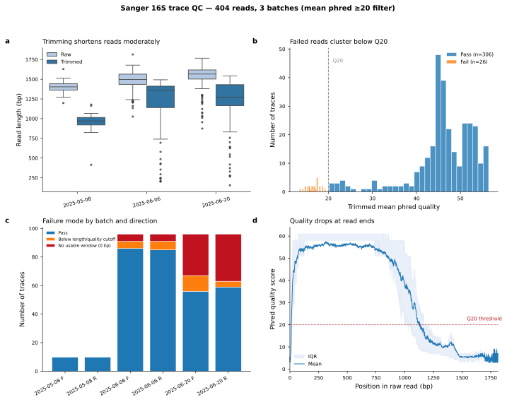

Quality control and assembly of 16S rRNA Sanger traces
1 Setup
1.1 Libraries
Loads required libraries
1.2 Global variables
Paths are resolved from the project root rather than the working directory, so the notebook behaves the same whether it is rendered by Quarto or run interactively. This is the Python counterpart of here::here() used in the R notebooks: walk up from the working directory until an anchor file that marks the top of the repository is found.
Show/hide code
def proj_root(anchors=(".here", "_quarto.yml", ".git")):
"""Return the nearest ancestor directory containing one of `anchors`."""
start = Path.cwd().resolve()
for d in (start, *start.parents):
if any((d / a).exists() for a in anchors):
return d
raise FileNotFoundError(f"no project anchor {anchors} above {start}")
data_raw_dir = proj_root() / "data" / "raw" / "sanger_sequencing"
data_processed = proj_root() / "data" / "processed" / "01_sanger_seq"
output_figures = proj_root() / "output" / "figures"
data_processed.mkdir(parents=True, exist_ok=True)
output_figures.mkdir(parents=True, exist_ok=True)Raw input. data_raw_dir contains one subdirectory per Macrogen sequencing order (<date>_<vendor code>) plus a single metadata table, mapping_table_tsv, with one row per physical trace. Its columns are macrogen_id, direction (F/R), subdir (which batch subdirectory the trace lives in), isolation_loc, isolation_plate_well, strainID, google_drive_id, and status. Every trace file is named <subdir>/<macrogen_id>_customer.ab1, so no filename parsing or separate plate-map join is needed - the mapping table supplies batch, direction, and strain identity directly per trace.
Quality-control parameters for the sliding-window trimming and the pass/fail call on each trimmed read.
Show/hide code
WINDOW = 20 # sliding-window width (bp) for quality trimming
QUAL_THRESHOLD = 20 # min mean phred in the window to start/end the keep region
MIN_LENGTH = 100 # min trimmed length (bp) to retain a read
MEAN_QUAL_MIN = 20 # min mean phred of the trimmed read
MAX_N_FRACTION = 0.05 # max fraction of ambiguous bases in the trimmed readScoring parameters for the local alignment used to merge the forward read against the reverse-complemented reverse read.
2 Parsing traces
Loads the mapping table and drops rows with no usable identity: status in {"unused_plate_well", "no_strain_link"} rows have neither a strainID nor a google_drive_id (unused plate wells and ad-hoc tubes that were never linked to a strain), so there is nothing to assemble or name a consensus sequence after. Every remaining row has a real trace file on disk.
Each row’s sample_key - the identifier used to pair forward/reverse reads and, eventually, to name the consensus sequence - is strainID when present, falling back to google_drive_id otherwise (negative controls and the four unidentified_strain reads have no strainID).
Show/hide code
def load_mapping_table(mapping_table_path):
"""Load the trace-level mapping table, dropping reads with no strain identity."""
mt = pd.read_csv(mapping_table_path, sep="\t", na_values="NA")
mt = mt[~(mt["strainID"].isna() & mt["google_drive_id"].isna())].copy()
mt["sample_key"] = mt["strainID"].fillna(mt["google_drive_id"])
return mtReads every .ab1 named by the mapping table into a table of raw reads, one row per trace. Zero-byte files and truncated chromatograms are collected separately rather than raising, so a single bad trace does not abort the run.
Show/hide code
def parse_traces(mapping_table, data_raw_dir):
"""Read every .ab1 named in mapping_table into a DataFrame of raw reads."""
records, errors = [], []
for row in mapping_table.itertuples(index=False):
batch_dir = row.subdir
fname = f"{row.macrogen_id}_customer.ab1"
ab1 = data_raw_dir / batch_dir / fname
if not ab1.exists():
errors.append({"batch": batch_dir, "filename": fname, "error": "missing"})
continue
if ab1.stat().st_size == 0:
errors.append({"batch": batch_dir, "filename": fname, "error": "zero-byte"})
continue
try:
rec = SeqIO.read(str(ab1), "abi")
quals = rec.letter_annotations["phred_quality"]
seq_str = str(rec.seq)
records.append(
{
"batch": batch_dir,
"sample_key": row.sample_key,
"direction": row.direction,
"macrogen_id": row.macrogen_id,
"filename": fname,
"filepath": str(ab1),
"strainID": row.strainID,
"google_drive_id": row.google_drive_id,
"isolation_loc": row.isolation_loc,
"isolation_plate_well": row.isolation_plate_well,
"status": row.status,
"raw_length": len(seq_str),
"raw_seq": seq_str,
"raw_quals": quals,
"raw_mean_qual": round(np.mean(quals), 1),
"raw_median_qual": float(np.median(quals)),
"n_count": seq_str.count("N"),
"n_fraction": (
round(seq_str.count("N") / len(seq_str), 4)
if len(seq_str) > 0
else 0
),
}
)
except Exception as e: # unreadable / truncated trace
errors.append({"batch": batch_dir, "filename": fname, "error": str(e)})
return pd.DataFrame(records), pd.DataFrame(errors)Show/hide code
mapping_table = load_mapping_table(mapping_table_tsv)
reads, read_errors = parse_traces(mapping_table, data_raw_dir)
assert len(reads) > 0, f"no traces parsed from {data_raw_dir}"
print(f"mapping table rows (usable) : {len(mapping_table)}")
print(f"traces parsed : {len(reads)}")
print(f"read errors : {len(read_errors)}")mapping table rows (usable) : 638
traces parsed : 638
read errors : 0Any traces that could not be read at all are listed here.
3 Quality trimming
Each read is trimmed to the region flanked by windows whose mean phred score clears QUAL_THRESHOLD. A read with no acceptable region, or one whose surviving region is shorter than MIN_LENGTH, gets the empty interval (0, 0) and is discarded downstream.
Show/hide code
def sliding_window_trim(quals, window=20, threshold=20, min_length=100):
"""Return (start, end) of the region flanked by windows of mean phred >= threshold.
(0, 0) means the read has no acceptable region and is discarded.
"""
n = len(quals)
if n < window:
return (0, 0)
trim_start = 0
for i in range(n - window + 1):
if np.mean(quals[i : i + window]) >= threshold:
trim_start = i
break
else:
return (0, 0)
trim_end = n
for i in range(n, window - 1, -1):
if np.mean(quals[i - window : i]) >= threshold:
trim_end = i
break
else:
return (0, 0)
if trim_end - trim_start < min_length:
return (0, 0)
return (trim_start, trim_end)A trimmed read passes QC when it is long enough, has a high enough mean phred score, and carries few enough ambiguous bases.
Show/hide code
def trim_and_score(df):
"""Add trim coordinates, trimmed stats, and the qc_pass flag to the read table."""
trim_results = []
for _, row in df.iterrows():
quals, seq = row["raw_quals"], row["raw_seq"]
start, end = sliding_window_trim(quals, WINDOW, QUAL_THRESHOLD, MIN_LENGTH)
trimmed_seq = seq[start:end]
trimmed_quals = quals[start:end]
trimmed_len = end - start
trimmed_mean_qual = round(np.mean(trimmed_quals), 1) if trimmed_len > 0 else 0.0
trimmed_n_count = trimmed_seq.count("N") if trimmed_len > 0 else 0
trimmed_n_frac = (
round(trimmed_n_count / trimmed_len, 4) if trimmed_len > 0 else 0.0
)
passed = (
trimmed_len >= MIN_LENGTH
and trimmed_mean_qual >= MEAN_QUAL_MIN
and trimmed_n_frac <= MAX_N_FRACTION
)
trim_results.append(
{
"trim_start": start,
"trim_end": end,
"trimmed_length": trimmed_len,
"trimmed_mean_qual": trimmed_mean_qual,
"trimmed_n_count": trimmed_n_count,
"trimmed_n_fraction": trimmed_n_frac,
"trimmed_seq": trimmed_seq,
"trimmed_quals": trimmed_quals,
"qc_pass": passed,
}
)
return pd.concat(
[df.reset_index(drop=True), pd.DataFrame(trim_results)], axis=1
)4 Assembling consensus sequences
Paired wells are merged by local alignment of the forward read against the reverse-complemented reverse read. Inside aligned blocks, disagreements are resolved in favour of the higher-quality base; unaligned flanks are taken from whichever read covers them; gap regions present in both reads are taken from the higher mean-quality stretch. If the best local alignment scores below MIN_ALN_SCORE the reads are assumed not to overlap and the longer read is returned unmerged.
Show/hide code
def reverse_complement(seq_str):
return str(Seq(seq_str).reverse_complement())
def _make_aligner():
aligner = PairwiseAligner()
aligner.mode = "local"
aligner.match_score = ALN_MATCH
aligner.mismatch_score = ALN_MISMATCH
aligner.open_gap_score = ALN_GAP_OPEN
aligner.extend_gap_score = ALN_GAP_EXTEND
return aligner
def build_consensus(fwd_seq, fwd_quals, rev_seq, rev_quals):
"""Merge a forward and reverse read into one sequence.
Returns (consensus_seq, info_dict).
"""
rev_rc = reverse_complement(rev_seq)
rev_quals_rc = rev_quals[::-1]
aln = _make_aligner().align(fwd_seq, rev_rc)[0]
if aln.score < MIN_ALN_SCORE:
longer = fwd_seq if len(fwd_seq) >= len(rev_rc) else rev_rc
return longer, {
"overlap_length": 0,
"overlap_pct_identity": 0.0,
"alignment_score": aln.score,
"note": "no_overlap",
}
t_blocks, q_blocks = aln.aligned[0], aln.aligned[1]
total_aligned = total_matches = 0
for (ts, te), (qs, qe) in zip(t_blocks, q_blocks):
seg_len = te - ts
total_aligned += seg_len
for i in range(seg_len):
if fwd_seq[ts + i] == rev_rc[qs + i]:
total_matches += 1
t_start_global = t_blocks[0][0]
q_end_global = q_blocks[-1][1]
consensus_parts = []
if t_start_global > 0: # forward-only 5' flank
consensus_parts.append(fwd_seq[:t_start_global])
for block_idx, ((ts, te), (qs, qe)) in enumerate(zip(t_blocks, q_blocks)):
if block_idx > 0: # bridge the inter-block gap
prev_t_end = t_blocks[block_idx - 1][1]
prev_q_end = q_blocks[block_idx - 1][1]
t_gap = ts - prev_t_end
q_gap = qs - prev_q_end
if t_gap > 0 and q_gap == 0:
consensus_parts.append(fwd_seq[prev_t_end:ts])
elif q_gap > 0 and t_gap == 0:
consensus_parts.append(rev_rc[prev_q_end:qs])
elif t_gap > 0 and q_gap > 0:
t_gap_q = np.mean(fwd_quals[prev_t_end:ts])
q_gap_q = np.mean(rev_quals_rc[prev_q_end:qs])
consensus_parts.append(
fwd_seq[prev_t_end:ts] if t_gap_q >= q_gap_q
else rev_rc[prev_q_end:qs]
)
for i in range(te - ts): # quality-weighted base calls
if fwd_seq[ts + i] == rev_rc[qs + i]:
consensus_parts.append(fwd_seq[ts + i])
elif fwd_quals[ts + i] >= rev_quals_rc[qs + i]:
consensus_parts.append(fwd_seq[ts + i])
else:
consensus_parts.append(rev_rc[qs + i])
if q_end_global < len(rev_rc): # reverse-only 3' flank
consensus_parts.append(rev_rc[q_end_global:])
pct_id = round(total_matches / total_aligned * 100, 1) if total_aligned > 0 else 0.0
return "".join(consensus_parts), {
"overlap_length": total_aligned,
"overlap_mismatches": total_aligned - total_matches,
"overlap_pct_identity": pct_id,
"alignment_score": aln.score,
"n_aligned_blocks": len(t_blocks),
}Wells with only one passing direction are carried through as singletons. Reverse singletons are reverse-complemented so that all output is 5’->3’ forward.
Show/hide code
META_COLS = [
"strainID",
"google_drive_id",
"isolation_loc",
"isolation_plate_well",
"status",
]
def assemble(df):
"""Assemble one record per (batch, sample_key) from the QC-passing reads."""
passing = df[df["qc_pass"]].copy()
assembly_results = []
for (batch, sample_key), group in passing.groupby(["batch", "sample_key"]):
directions = dict(zip(group["direction"], group.index))
meta = {col: group.iloc[0][col] for col in META_COLS}
if "F" in directions and "R" in directions:
fwd_row = df.loc[directions["F"]]
rev_row = df.loc[directions["R"]]
consensus_seq, info = build_consensus(
fwd_row["trimmed_seq"],
fwd_row["trimmed_quals"],
rev_row["trimmed_seq"],
rev_row["trimmed_quals"],
)
assembly_results.append(
{
"batch": batch,
"sample_key": sample_key,
"assembly_type": "consensus",
"consensus_seq": consensus_seq,
"consensus_length": len(consensus_seq),
"fwd_trimmed_length": fwd_row["trimmed_length"],
"rev_trimmed_length": rev_row["trimmed_length"],
**meta,
**info,
}
)
else:
d = "F" if "F" in directions else "R"
row = df.loc[directions[d]]
seq = row["trimmed_seq"]
if d == "R":
seq = reverse_complement(seq)
assembly_results.append(
{
"batch": batch,
"sample_key": sample_key,
"assembly_type": f"singleton_{d}",
"consensus_seq": seq,
"consensus_length": len(seq),
"fwd_trimmed_length": row["trimmed_length"] if d == "F" else 0,
"rev_trimmed_length": row["trimmed_length"] if d == "R" else 0,
**meta,
"overlap_length": 0,
"overlap_mismatches": 0,
"overlap_pct_identity": 0.0,
"alignment_score": 0,
}
)
return pd.DataFrame(assembly_results)5 Minting sequence IDs
Every assembly already carries its strainID/google_drive_id straight from the mapping table, so no further join is needed - only a stable, unique FASTA identifier has to be minted. sample_key (strainID, falling back to google_drive_id when no strainID was ever assigned) is used as-is when it is unique across the whole dataset; strains re-sequenced in more than one batch get their subdir appended ({sample_key}_{batch}) to disambiguate.
Show/hide code
def mint_seq_ids(assembly_df):
"""Mint a unique seq_id per assembly: sample_key, or sample_key_batch if not unique."""
df = assembly_df.copy()
dup = df["sample_key"].duplicated(keep=False)
df["seq_id"] = np.where(
dup, df["sample_key"] + "_" + df["batch"], df["sample_key"]
)
assert df["seq_id"].is_unique, "minted seq_id is not unique"
return dfShow/hide code
assemblies written : 278
assembly_type
consensus 243
singleton_F 20
singleton_R 15
median length : 1418 bp6 Output
Four deliverables are written to data/processed/01_sanger_seq/. The QC table records one row per input trace; the failed-traces table is the subset of those that did not pass QC (qc_pass == False), for troubleshooting; the assemblies table has one row per isolate; and the FASTA carries the consensus sequences used for downstream taxonomic assignment.
Show/hide code
QC_EXPORT_COLS = [
"batch",
"sample_key",
"direction",
"macrogen_id",
"filename",
"filepath",
"raw_length",
"raw_mean_qual",
"raw_median_qual",
"n_count",
"n_fraction",
"trim_start",
"trim_end",
"trimmed_length",
"trimmed_mean_qual",
"trimmed_n_count",
"trimmed_n_fraction",
"qc_pass",
]
reads[QC_EXPORT_COLS].to_csv(
data_processed / "sanger_trace_qc_metrics.csv", index=False
)
reads.loc[~reads["qc_pass"], QC_EXPORT_COLS].to_csv(
data_processed / "failed_traces.csv", index=False
)
merged.to_csv(data_processed / "assemblies.csv", index=False)Show/hide code
def write_fasta(merged, out_path):
fasta_records = []
for _, row in merged.iterrows():
desc_parts = [
f"batch={row['batch']}",
f"type={row['assembly_type']}",
f"len={row['consensus_length']}",
f"status={row['status']}",
]
if pd.notna(row.get("isolation_loc")):
desc_parts.append(f"location={row['isolation_loc']}")
if pd.notna(row.get("isolation_plate_well")):
desc_parts.append(f"isolate_well={row['isolation_plate_well']}")
fasta_records.append(
SeqRecord(
Seq(row["consensus_seq"]),
id=row["seq_id"],
description=" ".join(desc_parts),
)
)
SeqIO.write(fasta_records, out_path, "fasta")
return len(fasta_records)
n_written = write_fasta(merged, data_processed / "consensus_16S.fasta")
print(f"{n_written} consensus sequences written")278 consensus sequences writtenPer-trace QC metrics.
| batch | sample_key | direction | macrogen_id | filename | filepath | raw_length | raw_mean_qual | raw_median_qual | n_count | n_fraction | trim_start | trim_end | trimmed_length | trimmed_mean_qual | trimmed_n_count | trimmed_n_fraction | qc_pass | |
|---|---|---|---|---|---|---|---|---|---|---|---|---|---|---|---|---|---|---|
| 0 | 20250508_24CCKAA | SJ_G02 | F | 24CCKAA037 | 24CCKAA037_customer.ab1 | /home/shane/Documents/work/projects/hogle_lab/... | 1401 | 37.2 | 51.0 | 0 | 0.0 | 11 | 980 | 969 | 50.4 | 0 | 0.0 | True |
| 1 | 20250508_24CCKAA | SJ_G02 | R | 24CCKAA038 | 24CCKAA038_customer.ab1 | /home/shane/Documents/work/projects/hogle_lab/... | 1438 | 40.2 | 52.0 | 0 | 0.0 | 8 | 1074 | 1066 | 51.8 | 0 | 0.0 | True |
| 2 | 20250508_24CCKAA | SJ01 | F | 24CCKAA039 | 24CCKAA039_customer.ab1 | /home/shane/Documents/work/projects/hogle_lab/... | 1457 | 32.7 | 32.0 | 0 | 0.0 | 18 | 1183 | 1165 | 39.2 | 0 | 0.0 | True |
| 3 | 20250508_24CCKAA | SJ01 | R | 24CCKAA040 | 24CCKAA040_customer.ab1 | /home/shane/Documents/work/projects/hogle_lab/... | 1198 | 19.2 | 15.0 | 0 | 0.0 | 540 | 954 | 414 | 30.4 | 0 | 0.0 | True |
| 4 | 20250508_24CCKAA | SJ_G09 | F | 24CCKAA041 | 24CCKAA041_customer.ab1 | /home/shane/Documents/work/projects/hogle_lab/... | 1344 | 35.8 | 45.0 | 0 | 0.0 | 0 | 924 | 924 | 48.6 | 0 | 0.0 | True |
Assembly metrics, one row per isolate.
| batch | sample_key | assembly_type | consensus_length | fwd_trimmed_length | rev_trimmed_length | strainID | google_drive_id | isolation_loc | isolation_plate_well | status | overlap_length | overlap_mismatches | overlap_pct_identity | alignment_score | n_aligned_blocks | seq_id | |
|---|---|---|---|---|---|---|---|---|---|---|---|---|---|---|---|---|---|
| 0 | 20250508_24CCKAA | HA05 | consensus | 1425 | 892 | 992 | HA05 | HA_A05 | Haunisten Allas | A05 | resolved | 458 | 8 | 98.3 | 851.0 | 6.0 | HA05_20250508_24CCKAA |
| 1 | 20250508_24CCKAA | HA26 | consensus | 1395 | 859 | 1005 | HA26 | HA_C07 | Haunisten Allas | C07 | resolved | 463 | 9 | 98.1 | 851.0 | 7.0 | HA26_20250508_24CCKAA |
| 2 | 20250508_24CCKAA | HA71 | consensus | 1293 | 824 | 1044 | HA71 | HA_H12 | Haunisten Allas | H12 | resolved | 575 | 25 | 95.7 | 938.0 | 18.0 | HA71_20250508_24CCKAA |
| 3 | 20250508_24CCKAA | SJ01 | consensus | 849 | 1165 | 414 | SJ01 | SJ_A05 | Savojärvi | A05 | resolved | 408 | 11 | 97.3 | 742.0 | 4.0 | SJ01_20250508_24CCKAA |
| 4 | 20250508_24CCKAA | SJ_G02 | consensus | 1428 | 969 | 1066 | NaN | SJ_G02 | Savojärvi | G02 | unidentified_strain | 604 | 17 | 97.2 | 1038.0 | 18.0 | SJ_G02 |
7 QC plot
Palette and batch labels used by the summary figure. Batch (subdir) names are <date>_<vendor code>, so the plot label is just the date portion, reformatted.
Show/hide code
BLUE = "#1f77b4" # matplotlib default C0
BLUE_LIGHT = "#aec7e8"
FAIL_CUTOFF = "#ff7f0e" # trimmed, but below the length or quality cutoff
FAIL_COLOR = "#c1121f" # no acceptable quality window at all
META_GREY = "#888888"
BATCH_LABELS = {
batch: f"{batch[:4]}-{batch[4:6]}-{batch[6:8]}"
for batch in sorted(reads["batch"].unique())
}House figure style, applied through matplotlib’s rcParams so every panel picks it up without per-call styling.
Show/hide code
def apply_figure_style(*, frame="open", font=None, sizes=(8, 7, 6), grid=False, dpi=200):
"""Set matplotlib rcParams to the house figure style."""
if frame not in ("open", "boxed", "none"):
raise ValueError(f"frame must be 'open'|'boxed'|'none', got {frame!r}")
# register any .ttf fonts bundled with the active environment
try:
import glob
import os
import sys
import matplotlib.font_manager as fm
fdir = os.path.join(os.environ.get("CONDA_PREFIX") or sys.prefix, "fonts")
if os.path.isdir(fdir):
known = {f.fname for f in fm.fontManager.ttflist}
for f in glob.glob(os.path.join(fdir, "*.ttf")):
if f not in known:
fm.fontManager.addfont(f)
except Exception:
pass
base, secondary, tick = sizes
boxed = frame == "boxed"
mpl.rcParams.update(
{
"font.family": "sans-serif",
"font.size": base,
"axes.labelsize": base,
"axes.titlesize": base,
"legend.fontsize": secondary,
"xtick.labelsize": tick,
"ytick.labelsize": tick,
"axes.linewidth": 0.6,
"xtick.direction": "out",
"ytick.direction": "out",
"xtick.major.size": 3,
"ytick.major.size": 3,
"xtick.major.width": 0.6,
"ytick.major.width": 0.6,
"axes.spines.top": boxed,
"axes.spines.right": boxed,
"axes.spines.left": frame != "none",
"axes.spines.bottom": frame != "none",
"axes.grid": bool(grid),
"legend.frameon": False,
"figure.dpi": dpi,
"savefig.dpi": 300,
"savefig.bbox": "tight",
"axes.titleweight": "normal",
"axes.titlelocation": "left",
"axes.labelweight": "normal",
"lines.linewidth": 1.2,
"patch.linewidth": 0.6,
"pdf.fonttype": 42,
"ps.fonttype": 42,
**({"font.sans-serif": [font, "DejaVu Sans"]} if font else {}),
}
)
def panel_letter(ax, letter, dx=-0.18, dy=1.02, case="lower", fontsize=None):
"""Draw a bold panel label in axes-fraction coordinates."""
if fontsize is None:
fontsize = plt.rcParams.get("font.size", 8) + 1
s = letter.lower() if case == "lower" else letter.upper()
ax.text(
dx,
dy,
s,
transform=ax.transAxes,
fontweight="bold",
fontsize=fontsize,
va="bottom",
ha="left",
)Four panels: how far trimming shortens the reads, where passing and failing traces sit on the quality axis, the pass/fail split per batch and direction, and how quality decays along the read.
Show/hide code
# required libs
import matplotlib as mpl
import matplotlib.pyplot as plt
import seaborn as sns
# data to plot
df = reads[QC_EXPORT_COLS]
# Reads with no acceptable quality window get trim coordinates (0, 0). Their
# zero length and zero mean quality are not measurements, so panels (a) and (b)
# leave them out. Panel (c) keeps them, as their own failure class.
trimmed = df[df["trimmed_length"] > 0]
# raw phred arrays of the passing traces, for the position profile
raw_quals_passing = list(reads.loc[reads["qc_pass"], "raw_quals"])
apply_figure_style(sizes=(9, 8, 7))
fig, axes = plt.subplots(2, 2, figsize=(10, 8))
# (a) raw vs trimmed length per batch
ax = axes[0, 0]
panel_letter(ax, "a")
plot_data = trimmed[["batch", "raw_length", "trimmed_length"]].melt(
id_vars="batch", var_name="stage", value_name="length"
)
plot_data["stage"] = plot_data["stage"].map(
{"raw_length": "Raw", "trimmed_length": "Trimmed"}
)
plot_data["batch_label"] = plot_data["batch"].map(BATCH_LABELS)
sns.boxplot(
data=plot_data,
x="batch_label",
y="length",
hue="stage",
ax=ax,
palette={"Raw": BLUE_LIGHT, "Trimmed": BLUE},
fliersize=2,
linewidth=0.8,
)
ax.set_xlabel("")
ax.set_ylabel("Read length (bp)")
ax.set_title("Trimming shortens reads moderately", fontsize=9)
ax.legend(title="", frameon=False, fontsize=7)
ax.tick_params(axis="x", rotation=15)
# (b) trimmed mean-quality distribution, pass vs fail
ax = axes[0, 1]
panel_letter(ax, "b")
ax.hist(
trimmed[trimmed["qc_pass"]]["trimmed_mean_qual"],
bins=30,
alpha=0.8,
color=BLUE,
label=f"Pass (n={trimmed['qc_pass'].sum()})",
edgecolor="white",
linewidth=0.5,
)
ax.hist(
trimmed[~trimmed["qc_pass"]]["trimmed_mean_qual"],
bins=20,
alpha=0.8,
color=FAIL_CUTOFF,
label=f"Fail (n={(~trimmed['qc_pass']).sum()})",
edgecolor="white",
linewidth=0.5,
)
ax.axvline(MEAN_QUAL_MIN, color=META_GREY, ls="--", lw=1, zorder=0)
ax.text(
MEAN_QUAL_MIN + 1,
ax.get_ylim()[1] * 0.9,
f"Q{MEAN_QUAL_MIN}",
fontsize=7,
color=META_GREY,
)
ax.set_xlabel("Trimmed mean phred quality")
ax.set_ylabel("Number of traces")
ax.set_title(f"Failed reads cluster below Q{MEAN_QUAL_MIN}", fontsize=9)
ax.legend(frameon=False, fontsize=7)
# (c) QC outcome per batch and direction
ax = axes[1, 0]
panel_letter(ax, "c")
QC_CLASSES = ["Pass", "Below length/quality cutoff", "No usable window (0 bp)"]
QC_CLASS_COLORS = {
"Pass": BLUE,
"Below length/quality cutoff": FAIL_CUTOFF,
"No usable window (0 bp)": FAIL_COLOR,
}
qc_class = np.where(
df["qc_pass"],
"Pass",
np.where(
df["trimmed_length"] == 0,
"No usable window (0 bp)",
"Below length/quality cutoff",
),
)
pf = (
df.assign(qc_class=qc_class)
.groupby(["batch", "direction", "qc_class"])
.size()
.reset_index(name="count")
)
pf["batch_label"] = pf["batch"].map(BATCH_LABELS)
pf_pivot = (
pf.pivot_table(
index=["batch_label", "direction"],
columns="qc_class",
values="count",
fill_value=0,
)
# a batch/direction missing one class would otherwise drop that column
.reindex(columns=QC_CLASSES, fill_value=0)
.reset_index()
)
pf_pivot.columns.name = None
pf_pivot["label"] = pf_pivot["batch_label"] + " " + pf_pivot["direction"]
x_pos = range(len(pf_pivot))
bottom = np.zeros(len(pf_pivot))
for cls in QC_CLASSES:
ax.bar(
x_pos,
pf_pivot[cls],
bottom=bottom,
color=QC_CLASS_COLORS[cls],
label=cls,
edgecolor="white",
linewidth=0.5,
)
bottom += pf_pivot[cls].to_numpy()
ax.set_xticks(list(x_pos))
ax.set_xticklabels(pf_pivot["label"], rotation=30, ha="right", fontsize=7)
ax.set_ylabel("Number of traces")
ax.set_title("Failure mode by batch and direction", fontsize=9)
ax.legend(frameon=False, fontsize=6)
# (d) quality vs position along the read
ax = axes[1, 1]
panel_letter(ax, "d")
max_len = max(len(q) for q in raw_quals_passing)
qual_matrix = np.full((len(raw_quals_passing), max_len), np.nan)
for i, q in enumerate(raw_quals_passing):
qual_matrix[i, : len(q)] = q
positions = np.arange(max_len)
ax.fill_between(
positions,
np.nanpercentile(qual_matrix, 25, axis=0),
np.nanpercentile(qual_matrix, 75, axis=0),
alpha=0.25,
color=BLUE_LIGHT,
label="IQR",
)
ax.plot(positions, np.nanmean(qual_matrix, axis=0), color=BLUE, lw=1, label="Mean")
ax.axhline(MEAN_QUAL_MIN, color=FAIL_COLOR, ls="--", lw=0.8, alpha=0.7)
ax.text(
max_len * 0.85,
MEAN_QUAL_MIN + 2,
f"Q{MEAN_QUAL_MIN} threshold",
fontsize=7,
color=FAIL_COLOR,
)
ax.set_xlabel("Position in raw read (bp)")
ax.set_ylabel("Phred quality score")
ax.set_title("Quality drops at read ends", fontsize=9)
ax.legend(frameon=False, fontsize=7, loc="lower left")
ax.set_xlim(0, max_len)
fig.suptitle(
f"Sanger 16S trace QC \u2014 {len(df)} reads, "
f"{df['batch'].nunique()} batches (mean phred \u2265{MEAN_QUAL_MIN} filter)",
fontsize=10,
fontweight="bold",
y=0.98,
)
fig.tight_layout(rect=[0, 0, 1, 0.95])
fig.savefig(
output_figures / "sanger_qc_summary.png",
dpi=200,
bbox_inches="tight",
facecolor="white",
)
qc_figure_svg = output_figures / "sanger_qc_summary.svg"
fig.savefig(qc_figure_svg, bbox_inches="tight", facecolor="white")